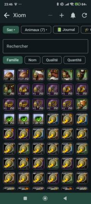
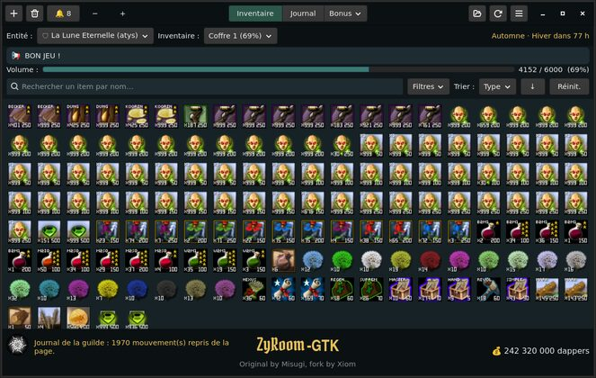
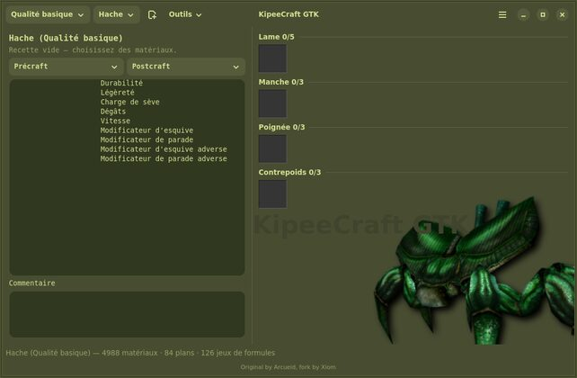
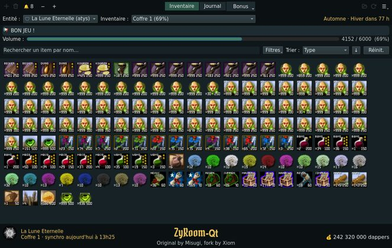

Vos inventaires, les coffres de la guilde et vos recettes de craft, hors ligne.
Sur un téléphone Android
Ouvrez le fichier depuis vos téléchargements. Android demandera l'autorisation d'installer une application venant d'ailleurs que du Play Store : acceptez. Ensuite, l'application vous prévient elle-même quand une nouvelle version paraît.

Sur un PC Linux
Ouvrez le fichier téléchargé. C'est tout : votre système l'installe, et l'application saura d'elle-même quand une nouvelle version paraît.

Sur un PC Linux
Une autre application, pour l'artisanat : simulateur de craft, base de matériaux et générateur de recettes. C'est la réécriture native Linux de KipeeCraft 1.2a d'Arcueid (2021), qui ne tournait jusqu'ici qu'à travers Wine — vos fichiers de recettes existants restent lisibles.
S'installe comme la précédente : ouvrez le fichier téléchargé.
Celle-ci ne se met pas à jour toute seule : revenez sur cette page de temps en temps.

Sur un PC Windows
Vous aviez déjà ZyRoom-Qt ? Reprenez l'archive ci-dessus, une fois. Jusqu'à la version 1.9, le bouton « Mettre à jour » échouait sous Windows sur un message parlant d'un « fichier utilisé par un autre processus ». C'est corrigé — mais le correctif est dans la nouvelle version, et celle que vous avez ne sait pas encore se remplacer toute seule.
Décompressez par-dessus l'ancien dossier, ou à côté puis supprimez l'ancien. Vos réglages et vos clés ne sont pas rangés là : ils ne risquent rien. Les mises à jour suivantes, elles, se feront toutes seules.
Décompressez l'archive où vous voulez, en gardant le dossier
entier, et lancez ZyRoom-Qt.exe. Rien à installer : Python
et Qt voyagent avec l'application.
Pour retrouver l'application dans le menu Démarrer et sur le Bureau, lancez
une fois Installer.bat, dans le même dossier. Il ne fait que poser
deux raccourcis, et Installer.bat /retirer les enlève. Si vous
déplacez le dossier ensuite, relancez-le depuis son nouvel emplacement.
Windows affichera un écran bleu d'avertissement au premier lancement, parce que le programme n'est pas signé — une signature coûte plusieurs centaines d'euros par an. Cliquez sur Informations complémentaires, puis sur Exécuter quand même.
ZyRoom-Qt est aussi disponible
pour Linux, à côté de ZyRoom-GTK
ci-dessus : c'est la même application, dans une autre boîte à outils. Cette
archive-là se décompresse pareil, et son installer.sh pose
l'entrée dans le menu.

L'application s'ouvre vide. Par le bouton +, ajoutez :
Une clé donne accès en lecture aux inventaires qu'elle couvre : elle se traite comme un mot de passe.
Rien à faire. L'application vérifie d'elle-même et vous propose la mise à jour ; vous n'avez plus à retélécharger de fichier.
Si vous aviez installé une version antérieure à la 0.3, elle
ne connaît pas encore la source des mises à jour. Retirez-la une fois —
flatpak uninstall --user net.ryzom.zyroomgtk — puis installez le
nouveau fichier. Vos réglages et vos clés sont conservés.
{kind=link}
{kind=link}
{kind=link}
{kind=link}